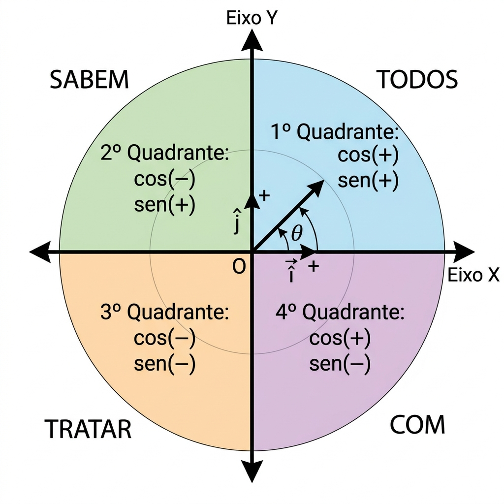
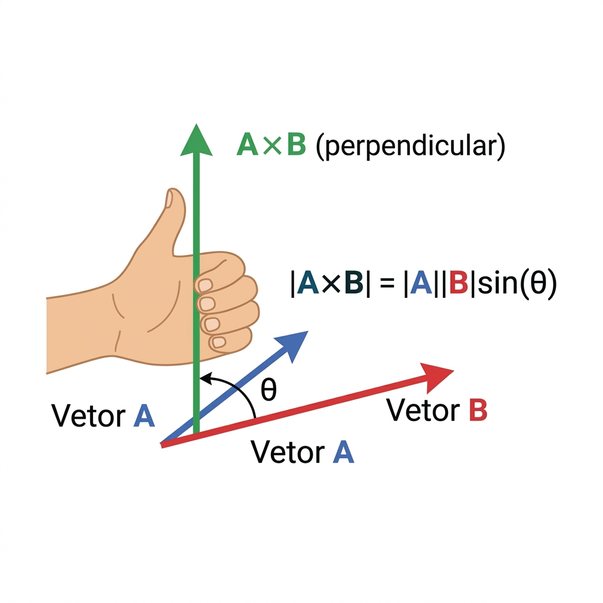
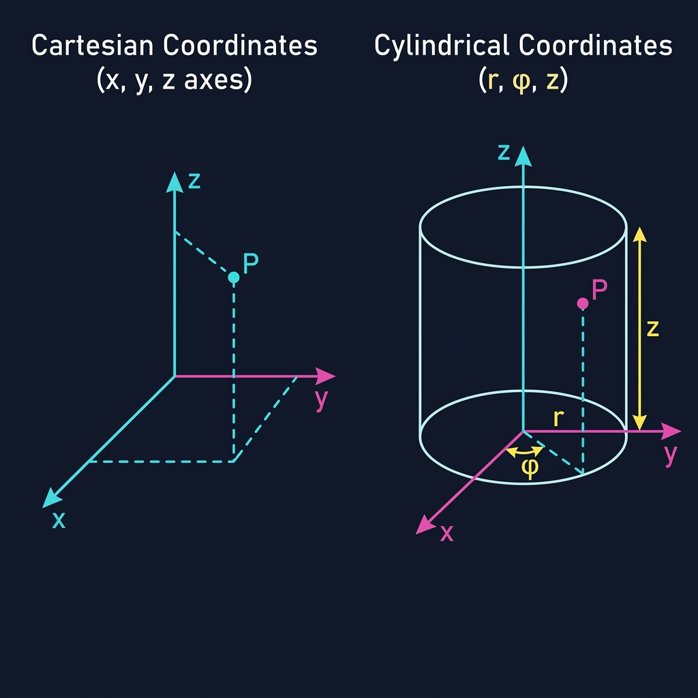

Fundamento #1
Decomposição de Vetores (î e ĵ)
O maior erro em provas é errar o sinal. A regra é simples: Cosseno = X (deitado), Seno = Y (em pé).
Sendo θ o ângulo partindo do eixo X positivo no sentido anti-horário.
Resposta na Prova
F⃗ = 70.7 î + 70.7 ĵ
Observe os sinais de î e ĵ a mudarem conforme passa pelos 4 quadrantes.
Fundamento #2
Os 4 Quadrantes — Sinais de cos e sen
Memorize: "Todos Sabem Tratar Com" — cada palavra indica quais funções são positivas no quadrante.

1º Quadrante (0° — 90°)
"Todos" — cos(+), sen(+). î positivo, ĵ positivo.
Exemplo: θ=30° → F⃗ = F·cos30° î + F·sen30° ĵ
2º Quadrante (90° — 180°)
"Sabem" — Seno positivo, cos negativo. î negativo, ĵ positivo.
Exemplo: θ=120° → Fx < 0, Fy > 0
3º Quadrante (180° — 270°)
"Tratar" — Tangente positiva (cos e sen ambos negativos). î negativo, ĵ negativo.
4º Quadrante (270° — 360°)
"Com" — Cosseno positivo, sen negativo. î positivo, ĵ negativo.
Referência Rápida
Tabela de Ângulos Notáveis
Decore esta tabela — ela aparece em praticamente todas as questões de decomposição vetorial.
| θ | 0° | 30° | 45° | 60° | 90° | 180° | 270° |
|---|---|---|---|---|---|---|---|
| cos(θ) | 1 | √3/2 | √2/2 | 1/2 | 0 | −1 | 0 |
| sen(θ) | 0 | 1/2 | √2/2 | √3/2 | 1 | 0 | −1 |
| tan(θ) | 0 | √3/3 | 1 | √3 | ∞ | 0 | ∞ |
| Decimal cos | 1.000 | 0.866 | 0.707 | 0.500 | 0.000 | −1.000 | 0.000 |
| Decimal sen | 0.000 | 0.500 | 0.707 | 0.866 | 1.000 | 0.000 | −1.000 |
💡 Truque de memorização: Para sen, a sequência 0° a 90° é √0/2, √1/2, √2/2, √3/2, √4/2. Para cos é o inverso!
Operações Vetoriais
Produto Escalar (·) vs Produto Vetorial (×)
Saber quando usar cada um é a diferença entre acertar e errar a questão.
Produto Escalar (Dot Product)
Resultado: um NÚMERO (escalar, sem direção)
Onde aparece na Física III:
- • Fluxo Elétrico: Φ = E⃗ · dA⃗
- • Trabalho: W = F⃗ · d⃗
- • Potência: P = F⃗ · v⃗
💡 Macete: Se θ = 90°, cos(90°) = 0, logo A⃗·B⃗ = 0. Vetores perpendiculares têm produto escalar zero!
Produto Vetorial (Cross Product)
Resultado: um VETOR (perpendicular aos dois originais)
Onde aparece na Física III:
- • Força Magnética: F⃗ = q·v⃗ × B⃗
- • Biot-Savart: dB⃗ ∝ ds⃗ × r̂
- • Torque: τ⃗ = r⃗ × F⃗
💡 Macete: Se θ = 0° ou 180°, sen = 0, logo A⃗×B⃗ = 0⃗. Vetores paralelos têm produto vetorial nulo!

Comparação Rápida
| Propriedade | Escalar (·) | Vetorial (×) |
|---|---|---|
| Resultado | Número | Vetor |
| Função trigonométrica | cos(θ) | sen(θ) |
| = 0 quando | Perpendiculares (90°) | Paralelos (0°/180°) |
| Máximo quando | Paralelos (0°) | Perpendiculares (90°) |
| Comutativo? | Sim | Não! A×B = −B×A |
Sistemas de Coordenadas
Cartesianas vs Cilíndricas — Quando Usar Cada

Cartesianas (x, y, z)
Use quando:
- • Planos infinitos
- • Problemas com simetria retangular
- • Decomposição de forças e campos
Cilíndricas (r, φ, z)
Use quando:
- • Fios longos retos (Lei de Ampère)
- • Cilindros carregados (Lei de Gauss)
- • Qualquer simetria com eixo central
⚠️ Cuidado: r̂ (versor radial) muda de direção dependendo do ponto! Não é fixo como î.